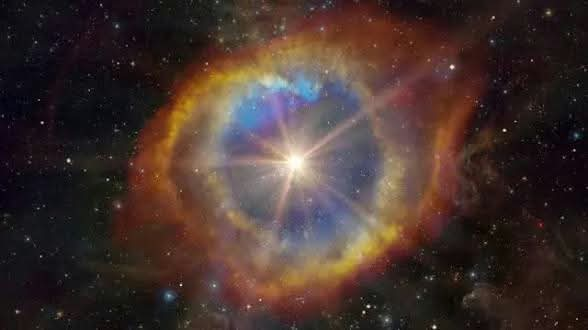

Introducción
El universo es inmenso. Contiene miles de millones de galaxias y una enorme cantidad de estrellas y planetas. Ante esta inmensidad surge una pregunta: ¿podría existir vida más allá de la Tierra?

¿Qué te gustaría conocer?
Explora información sobre el universo, conoce temas relacionados con la búsqueda de vida y revisa algunos descubrimientos astronómicos.